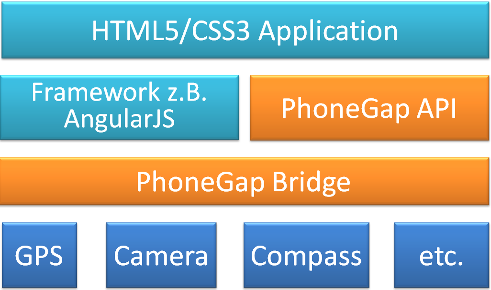
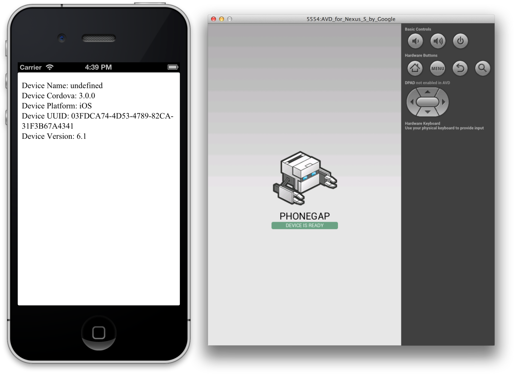
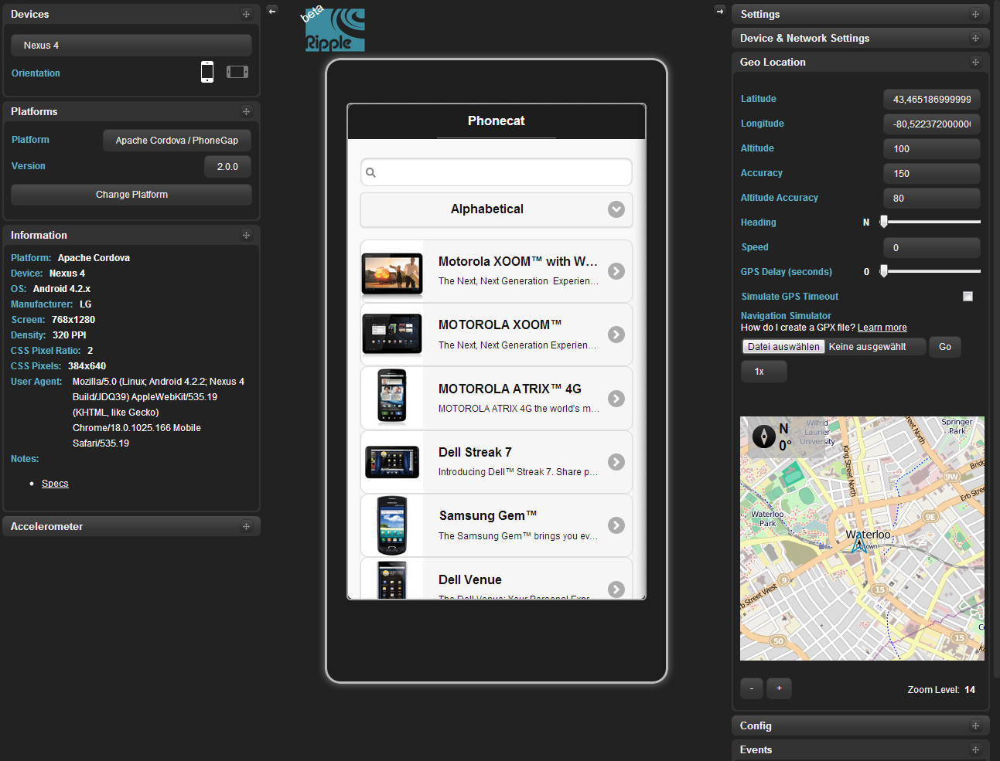

Hybride Apps mit AngualarJS und PhoneGap
Ein Ausblick in die Zukunft der hybriden Webentwicklung
Von Ivan Demin und Sergej Kasper für die T-Systems MMS
Agenda
- Motivation
- AngularJS
- PhoneGap
- Ripple Emulator
- PhoneGap Build
- Fazit
Quelle: Android; Apple; Bloomberg Businessweek; Google; Microsoft; RIM
Kategorisierung von Apps
| # | Native Apps | Web Apps | Hybride Apps |
|---|---|---|---|
| Vorteil | Hardware Zugriff | Plattformunabhängigkeit | Hardware Zugriff Platformunabhängigkeit |
| Nachteil | Plattformabhängigkeit | Kein Hardware Zugriff | Performance |
Hybride App Architektur
JavaScript Framework für dynamische Websites, Webapps und hybride Apps
Interesse an AngularJS
Was ermöglicht Angular?
- HTML für dynamische Views mit eigenen Tags erweitern
- Das Two-Way Binding nutzen
- MVC, Services und Dependency Injection verwenden
Einstieg in Angular
MVC
HTML als DSL
Data Binding
MVC - Aufbau einer AngularJS Anwendung
Das Coden {{model + '!'}}
Einstieg in Angular
JS
<script src="angular.min.js">
</script>
<script>
function aController($scope){
$scope.einModel = "kann beginnen";
}
</script>
HTML
<body ng-app>
<div ng-controller="einController">
<input type="text" ng-model="einModel">
Das Coden {{einModel + "!"}}
</div>
</body>
{{features[1].headline}}
{{features[1].conclusion}}
HTML als DSL - Angular macht HTML erweiterbar
Ist das gut?
Auf jeden Fall!
Ist das cool?
<input ng-model="zeigeText" type="checkbox">
<b ng-show="zeigeText"> Auf jeden Fall!</b>HTML als DSL - Alternative in JQuery
Ist das cool?
<input id="zeigeText" type="checkbox">
<b id="einText"> Auf jeden Fall!</b>$(function() {
function showOrHide() {
var isChecked = $('#zeigeText').is(':checked');
// imperative Code dependency
var fn = $('#einText');
if (isChecked)
fn.show();
else
fn.hide();
}
$('#zeigeText').change(function() {
showOrHide();
});
showOrHide();
});HTML als DSL - {{features[0].headline}}
{{features[0].conclusion}}
Data Bindung - Bietet Angular ein Two-Way Binding?
Die vorangehende Checkbox sagt ja! anklicken ;)
Die vorangehende Checkbox
<span ng-show="zeigeText">sagt ja!</span>
<span ng-hide="zeigeText">anklicken ;)</span>
2000 Livebindings pro page
Data Bindung - {{features[2].headline}}
{{features[2].conclusion}}
Tieferer Einblick in Angular
Directives
Services
Module
Directives - Wie erstelle ich einen eigenen HTML Tag?
<h3>Wie erstelle ich einen eigenen Tag?</h3>
<div class="switch">
<input ng-model="showMe" type="checkbox">
<label><i></i></label>
</div>
<div my-show="showMe">
<pre><code>/*Dieses Snippet*/</code></pre>
</div>
Directives - myShow user neues HTML Attribut
angular.directive('myShow', function () {
return {
restrict: 'A',
link: function (scope, element, attr) {
scope.$watch(attr.myShow, function(val){
element.css('display', val ? '' : 'none');
});
}
};
});document.getElementBy oder $(xy)
Binden der DOM Manipulation an das deklarierte Element!!
Services - Services in Angular
{{myOtherModel}}
Services - Wie erstelle und verwende ich einen Service?
<script>
angular
.controller('einServiceController', function ($scope, coderService) {
$scope.myModel = "Ich bin ein ";
$scope.$watch("myModel", function watchModel(value) {
$scope.myOtherModel = coderService.concat(value);
})
}).service('coderService', function(){
this.concat= function(text){
return text + "Service!";
};
});
</script>
<div ng-controller="einServiceController">
<input type="text" ng-model="myModel" style="border">
<br>
<h3> {{myOtherModel}} </h3>
</div>
Module - Kapseln von Anwendungslogik im JS
angular.module('myApp', ['userModul'])
.controller('userViewController', function ($scope, user, auth) {...});
angular.module('userModul', [])
.factory('user', function(){...})
.service('auth', function(user){...})
.directive('registerPopup', function(){...});
Angular is what the web browser would have been, had it been designed for applications.
Misko Hevery (Creator of AngularJS)
Angular Komponenten / Extensions
Warum AngularJS?
Erweitertes HTML = höheres Abstraktionslevel = viele UseCases abgedeckt
Diectives = gekapselte DOM Manipulation = Integration mit jQuery u.ä.
Controller + Model mit Scope + Template oder HTML = MVC
Services, Module + Dependancy Injection = Wartbarkeit, Testbarkeit
Filter = Format Expressions = Internationalisierung, Validierung...
Doku + Community = guter Support, geniale Extensions
Pretty sure that HTML6 is going under the codename @angularjs!
Some tweet at Twitter
PhoneGap
- Seit 2011 Apache Cordova
- Open-Source-Framework
- Apps für sieben verschiedene mobile Plattformen entwickeln (iOS, Android, Blackberry…)
- Bietet Schnittstellen für Geräte-Hardware
PhoneGap einrichten
Über die Komandozeile (NodeJS vorausgesetzt):
npm install -g phonegap
Manuell über die PhoneGap-Plattform
PhoneGap benutzen
Anlegen eines neuen Projektes:
phonegap create Phonecat
Umwandlung der Web-App für die jeweilige Plattform:
phonegap run android
Einbinden von PhoneGap
Ab der Version PhoneGap 3.0:
<script type="text/javascript" charset="utf-8"
src="phonegap.js"> </script>
Vor der Version PhoneGap 3.0:
<script type="text/javascript" charset="utf-8"
src="cordova-2.9.0.js"> </script>
Beispiel Anwendung
<head>
<title>Gerätedaten-Beispiel</title>
<script type="text/javascript" charset="utf-8"
src="phonegap.js"> </script>
<script src="phonegapDevice.js"> </script>
</head>
<body>
<p id="deviceProperties">Laden der Gerätedaten...</p >
</body>
Beispiel Anwendung
Code in phonegapDevice.js:
// Warten auf Cordova
document.addEventListener("deviceready", onDeviceReady, false);
// Cordova ist geladen.
function onDeviceReady() {
var element = document.getElementById('deviceProperties');
element.innerHTML = 'Device Name: ' + device.name + '<br />' +
'Device Cordova: ' + device.cordova + '<br />' +
'Device Platform: ' + device.platform + '<br />' +
'Device UUID: ' + device.uuid + '<br />' +
'Device Version: ' + device.version + '<br />';
}Ausgabe von Beispielanwendung
PhoneGap Anwendung konfigurieren
- Mit Hilfe einer config.xml Datei können: Name, Kodierung, Rechte, Icons etc. spezifiziert werden
- Dafür muss sich die Konfigurationsdatei im Rootverzeichnis befinden
Beipiel Config-Datei
<?xml version="1.0" encoding="UTF-8" ?>
<widget xmlns = "http://www.w3.org/ns/widgets"
xmlns:gap = "http://phonegap.com/ns/1.0"
id = "de.mms.phoneGapBeipiel"
versionCode = "10"
version = "1.0.0">
<!-- Versionscode ist nur für iOS und Android -->
<name>Phonecat</name>
<description>
Eine Beispielandwenung für den DLC 2013.
</description>
<author href="http://beispiel.de" email="ivan.demin@t-systems.de">
Ivan Demin & Sergej Kasper
</author>
</widget>Rechte
<preference name="permissions" value="none"/>
<feature name="http://api.phonegap.com/1.0/device" />
<feature name="http://api.phonegap.com/1.0/battery"/>
<feature name="http://api.phonegap.com/1.0/camera"/>
<feature name="http://api.phonegap.com/1.0/contacts"/>
<feature name="http://api.phonegap.com/1.0/file"/>
<feature name="http://api.phonegap.com/1.0/geolocation"/>
<feature name="http://api.phonegap.com/1.0/media"/>
<feature name="http://api.phonegap.com/1.0/network"/>
<feature name="http://api.phonegap.com/1.0/notification"/>
Access Element
Erlaubt den Zugriff auf Ressourcen anderer Domains
<!-- erlaubt lokale Seiten -->
<access origin="http://127.0.0.1*"/>
<!-- individueller Zugriff -->
<access origin="https://build.phonegap.com" />
<!-- erlaubt Zugriff auf alle externe Ressourcen -->
<access origin="*" />
PhoneGap Plugins
Ripple Emulator
Ripple Emulator
- Google Chrome Erweiterung
- Emuliert mobile Umgebungen
- Erleichtert die Entwicklung und Testung von Web/Hybrid-Apps geeignet
- Apache Cordova/PhoneGap integriert
PhoneGap Build
PhoneGap Build
- Cloudservice
- Kompiliert Quellcode in native Anwendungen
- Konfiguriert die App für die jeweilige Zielplattform
Fazit
Präsentation auf Github
App auf Github
App zum Download
Weiterführende Literatur